バージョン: 1.1、 August 2008
| 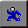 | Clickteam 動作コントローラー (CMC) |
本コントローラーは複数の異なる動作で利用できるよう設計されており、それぞれの動作について、個別にアクションや数式のサブメニューが用意されています。 本エクステンションでコントロールできるのは次の動作です:
各動作のアクションはどのオブジェクトに適用するかを指定しなければなりません。 したがってアクションを適用する前にまずオブジェクトを選択します。 注意: プレゼンテーション動作ではオブジェクトを選択する必要はありません。 自動的にフレーム内のオブジェクトが選択されます。 数式の場合は事情が少々異なり、適用するオブジェクトの固定値がパラメータとして必要になり、これはほとんどのオブジェクトの数式メニューから取得できます。 オブジェクトを変更 アクションで最後に指定されたオブジェクトを使用するには、固定値に 0 (ゼロ) を入力します。
数式で 2 つのオブジェクト間や 2 点間の距離や角度を計算することも可能です。
| 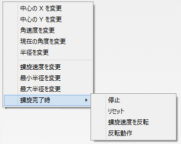 | 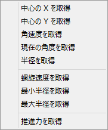 |
円動作のオブジェクトに適用できるアクションのメニュー (左)と数式のメニュー (右) です。
| 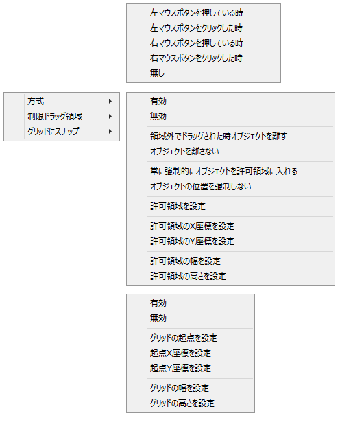 | 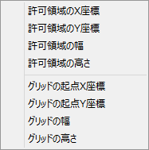 |
ドラッグ＆ドロップ動作のオブジェクトに適用できるアクションのメニュー (左)と数式のメニュー (右) です。
| 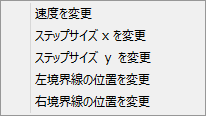 | 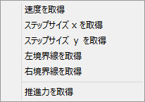 |
インベーダー動作のオブジェクトに適用できるアクションのメニュー (左)と数式のメニュー (右) です。
| 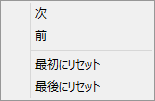 | 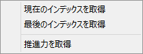 |
プレゼンテーション動作のオブジェクトに適用できるアクションのメニュー (左)と数式のメニュー (右) です。
| 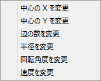 | 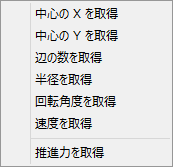 |
標準多角形動作のオブジェクトに適用できるアクションのメニュー (左)と数式のメニュー (右) です。
| 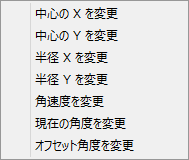 | 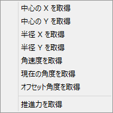 |
シンプル楕円動作のオブジェクトに適用できるアクションのメニュー (左)と数式のメニュー (右) です。
| 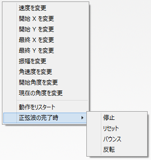 | 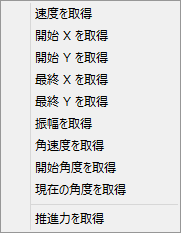 |
正弦波動作のオブジェクトに適用できるアクションのメニュー (左)と数式のメニュー (右) です。
| 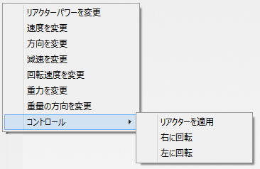 | 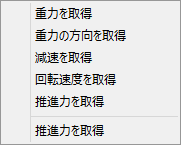 |
スペースシップ動作のオブジェクトに適用できるアクションのメニュー (左)と数式のメニュー (右) です。
| 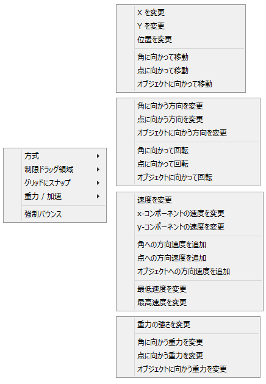 | 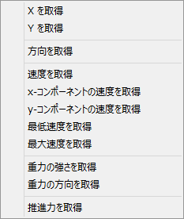 |
ベクター動作のオブジェクトに適用できるアクションのメニュー (左)と数式のメニュー (右) です。